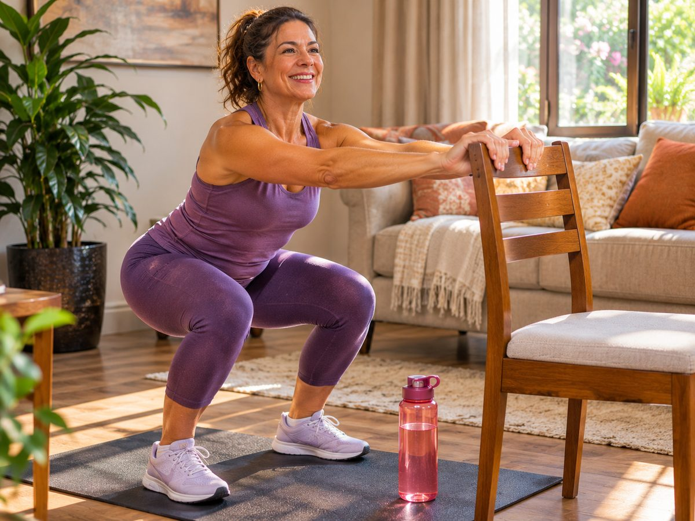
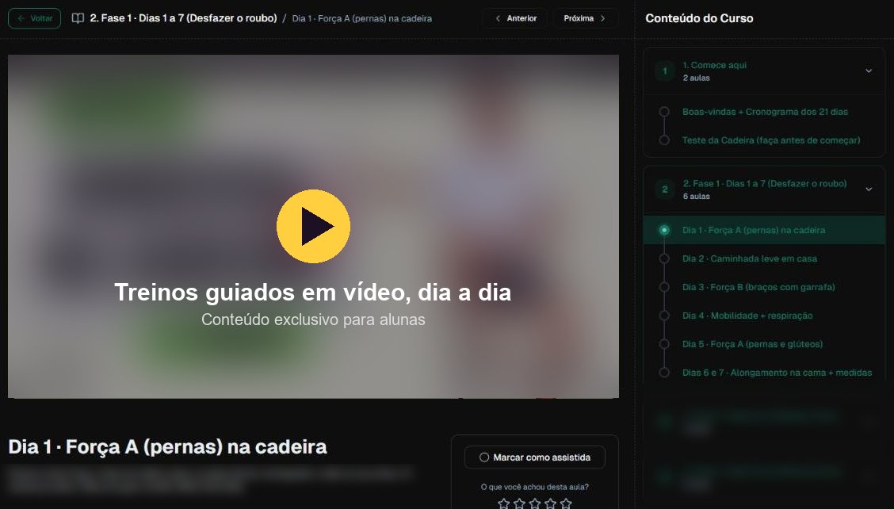

Coma MENOS e a barriga cresce? Pare agora com a dieta de fome. Ela está alimentando o "Roubo Silencioso"

O processo que rouba o músculo da mulher depois dos 45, joga a gordura direto na barriga e deixa você "falsa magra" e inchada, mesmo quando faz tudo o que mandaram.
Se você está lendo isto, aposto que já fez de tudo.
Cortou o pão. Cortou o arroz. Trocou o refrigerante pelo chá. Caminhou 40 minutos por dia até o joelho reclamar. Baixou aplicativo para contar caloria.
E a barriga continuou ali.
Às vezes até maior. Mais mole. Mais caída por cima da calça.
E aí vem a frase que dói mais do que qualquer balança: "Mas eu como feito um passarinho..."
Então vou te dizer o que ninguém teve coragem de dizer:
Você não está falhando na dieta. É a DIETA que está trabalhando contra você.
E é por isso que, quanto mais você se esforça do jeito antigo, mais o seu corpo se defende. Deixa eu te mostrar por quê. Leia até o final, porque a última parte é a que muda tudo.
Comer cada vez menos e a barriga continuar no mesmo lugar.
O mapa que te deram foi desenhado para outra mulher
Quase todo conselho de emagrecimento que você já ouviu foi pensado para a mulher de 25 anos.
Aquela que ainda tem estrogênio alto. Aquela que perde dois quilos só de pular a sobremesa.
Você não é ela. E não precisa ser. Mas precisa parar de seguir o mapa dela.
Porque, na menopausa, o estrogênio cai. E ele fazia duas coisas silenciosas por você:
- ajudava a proteger o seu músculo;
- ajudava a manter a gordura longe da barriga.
Quando ele cai, essas duas proteções caem junto. E começa o que eu chamo de:
O CICLO DO ROUBO SILENCIOSO
- O ladrão entra. Mês após mês, o corpo começa a perder músculo. Sem dor, sem aviso. Você só percebe que ficou "mais mole".
- A gordura muda de endereço. Ela sai do quadril e das pernas e se instala bem na barriga.
- Você faz dieta de fome. O corpo entende como PERIGO e, para economizar, queima ainda mais músculo.
- O motor encolhe. Menos músculo significa menos gasto. A balança trava, mesmo comendo pouco.
- A caminhada não salva. Ótima para o coração, mas sozinha não manda o recado que o músculo precisa para ficar.
Percebe a armadilha?
Comer menos acelera o roubo. E com o roubo acelerado, a barriga fica. Você se esforça mais, fica mais cansada, mais flácida... e culpa a sua força de vontade.
Não é culpa sua. Mas, a partir de hoje, é sua escolha continuar ou não.
A verdade que as dietas da moda escondem
O chá milagroso não segura músculo. O jejum de 16 horas não segura músculo. O shake de 200 calorias muito menos.
Nada disso responde à pergunta que importa depois dos 45:
"Como eu faço o meu corpo PARAR de jogar músculo fora?"
E a resposta é tão simples que chega a irritar: você precisa dar a ele um motivo para ficar.
Treino de força é uma das principais recomendações para preservar músculo depois da menopausa. Proteína bem distribuída nas refeições ajuda nisso. Dormir bem também. Isso não é novidade de laboratório. É o básico que ninguém te entregou mastigado.
Até agora.
Apresento o Método Âncora 15
Três âncoras. Quinze minutos. Na sala da sua casa.
- Âncora de Força: 15 minutos, 3 vezes por semana, com uma cadeira e uma garrafa de água. Movimentos seguros para joelho e coluna, que avisam ao seu corpo: "esse músculo é necessário, não leve embora".
- Prato Âncora: proteína certa em toda refeição. Você come MAIS comida de verdade e sente menos fome. Sem contar caloria, sem pesar comida.
- Ritual do Sono: noite mal dormida aumenta a fome e o estresse, e o estresse empurra gordura para a barriga. Aqui você corta isso pela raiz.
Sem academia. Sem remédio. Sem canetinha. Sem passar fome.
Isso é para você se...
- você tem mais de 45 e a barriga apareceu "do nada";
- você já tentou low carb, jejum, chá ou caminhada, e travou;
- você se sente mais mole, mais cansada, sem força para subir escada;
- você não tem tempo nem paciência para academia.
NÃO é para você se...
- você procura pílula mágica ou "perca 10 kg em 10 dias";
- você não consegue separar 15 minutos, 3 vezes por semana;
- você tem restrição médica para exercício e não conversou com o seu médico.
Veja por dentro da sua área de membros
Tudo organizado dia a dia: você abre, dá o play e faz. Sem precisar pensar no que fazer hoje.

- 7 módulos: Comece aqui, 3 fases de treino, Prato Âncora, Ritual do Sono e Bônus
- Treinos em vídeo organizados por dia, com o que fazer em cada um
- PDFs e planilha para baixar e imprimir
- Acesso pelo celular, tablet ou computador
Tudo o que você recebe hoje
[Conferir: os valores riscados precisam corresponder a preços pelos quais você realmente vende ou venderia cada item separado. Se não for o caso, troque por "valor percebido" ou remova.]
Um personal em casa, 3 vezes por semana, passa fácil de R$ 600 por mês. Uma consulta com nutricionista, mais R$ 300.
Você não vai pagar nem perto disso.
🔒 Compra segura · Pix ou cartão em até 12x
Agora você tem duas escolhas
Escolha 1: fechar esta página e voltar para a dieta de fome. Mais uma segunda-feira de "agora vai". Mais um mês de músculo indo embora em silêncio.
Escolha 2: investir menos de um cafezinho por dia e, hoje à noite, fazer o seu primeiro treino de 15 minutos.
O roubo não para sozinho. Cada mês sem estímulo de força é mais músculo que vai embora.
SIM, QUERO O PROGRAMA ÂNCORA 1512x R$ 13,12 ou R$ 127 à vista · garantia de 30 diasPerguntas frequentes
Nunca fiz exercício. Consigo?
Sim. O treino começa do nível zero, com uma cadeira de apoio. Se você tem alguma condição de saúde, converse com o seu médico antes de começar.
Tenho dor no joelho/coluna.
Cada movimento tem uma versão adaptada. Se doer, você usa a adaptação ou pula aquele exercício e fala com a equipe no grupo.
Preciso comprar equipamento?
Não. Cadeira e garrafa de água. Mais nada.
Quanto vou emagrecer?
Não prometemos quilos nem centímetros, porque cada corpo responde de um jeito. O que o método faz é atacar a causa que quase ninguém trata: a perda de músculo. Por isso a garantia é de 30 dias: você testa e decide.
Como recebo o acesso?
Na hora, por e-mail e WhatsApp, logo depois da confirmação do pagamento.
Substitui o meu médico?
Não. É um programa de hábitos e exercício. Ele não substitui acompanhamento médico nem tratamento.
P.S. Se você pulou direto para cá: depois dos 45, a barriga não fica só porque você come demais. Ela fica porque o corpo está perdendo músculo, e a dieta de fome acelera isso. O Âncora 15 inverte o jogo em 15 minutos, 3 vezes por semana. Toque aqui e comece hoje.
P.P.S. São 30 dias de garantia. Se não gostar, seu dinheiro volta. O único jeito de perder é continuar fazendo o que não funciona.
Este site não é afiliado ao Facebook ou à Meta. Resultados variam de pessoa para pessoa e dependem da aplicação. Este programa não substitui acompanhamento médico, nutricional ou tratamento de saúde. Consulte um profissional antes de iniciar atividade física.
[CNPJ · Contato · Política de Privacidade (LGPD) · Termos]